Unbelievably Crap
Captures desktop

Pages internes
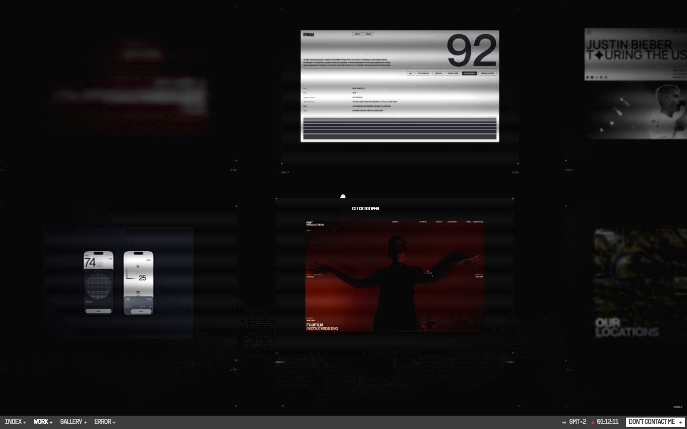
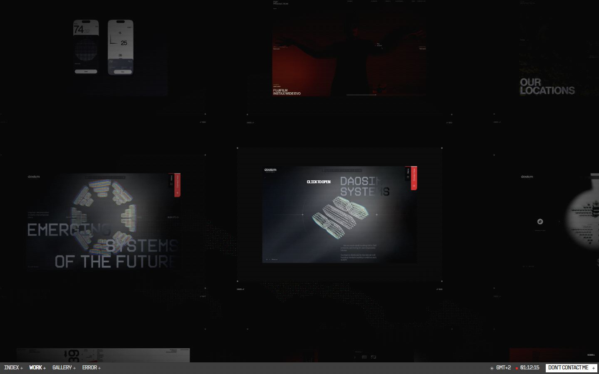
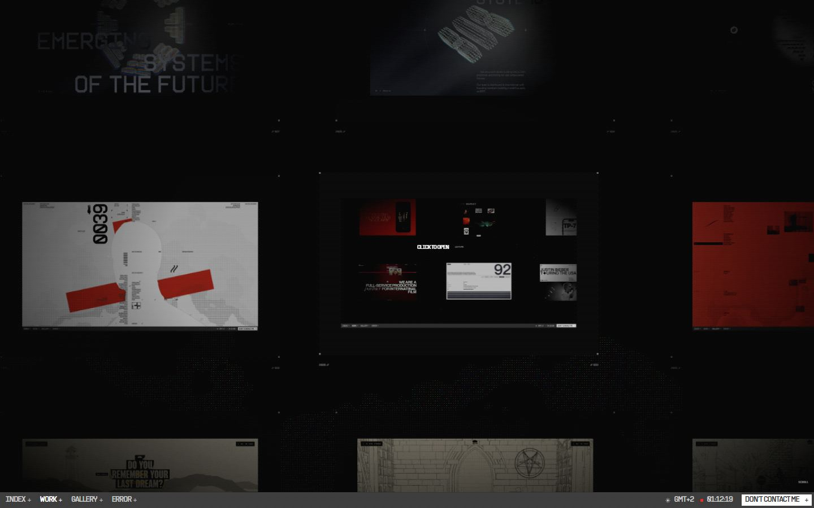
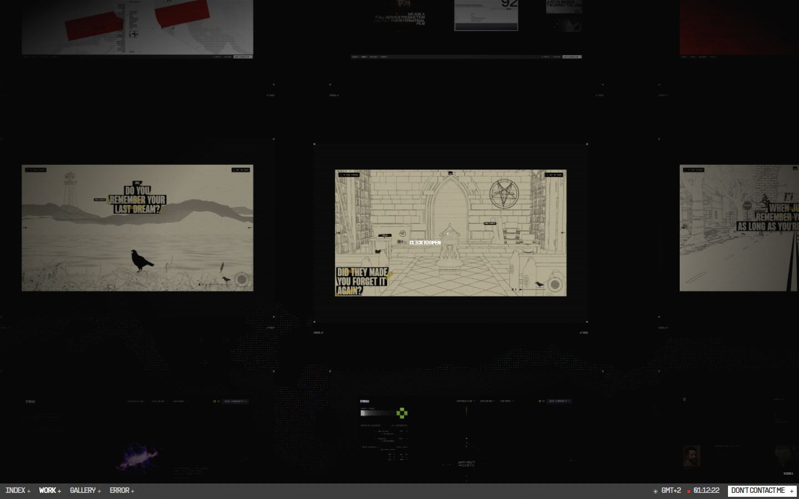
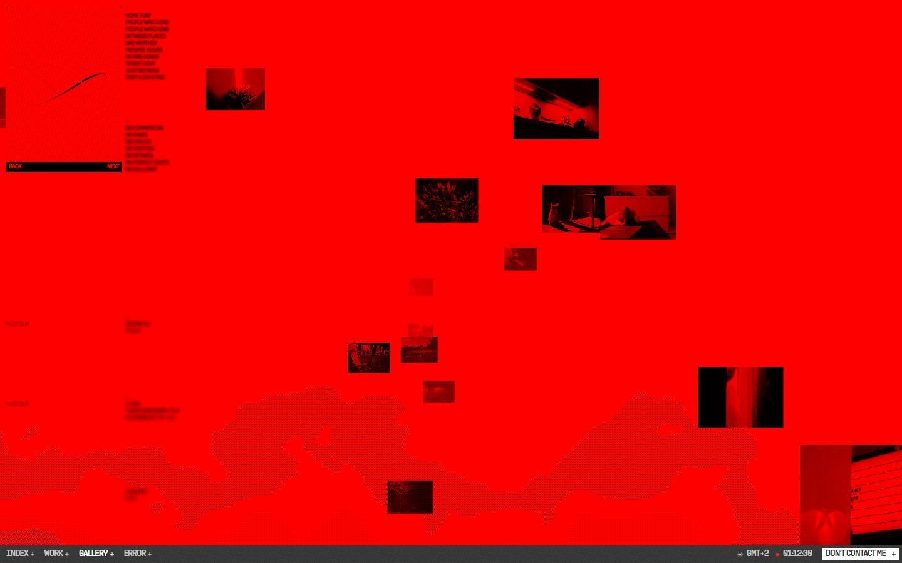
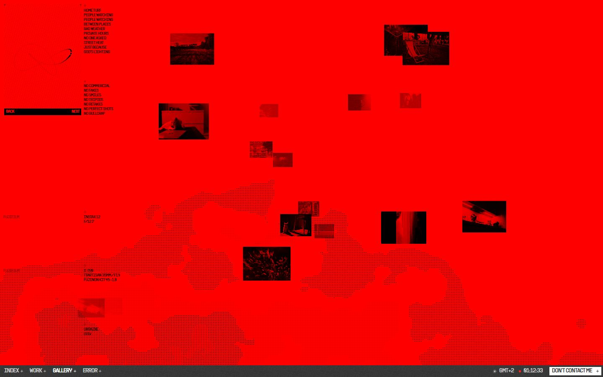
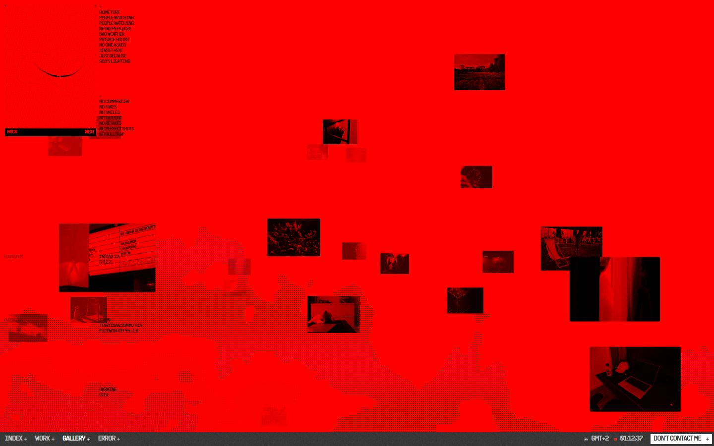
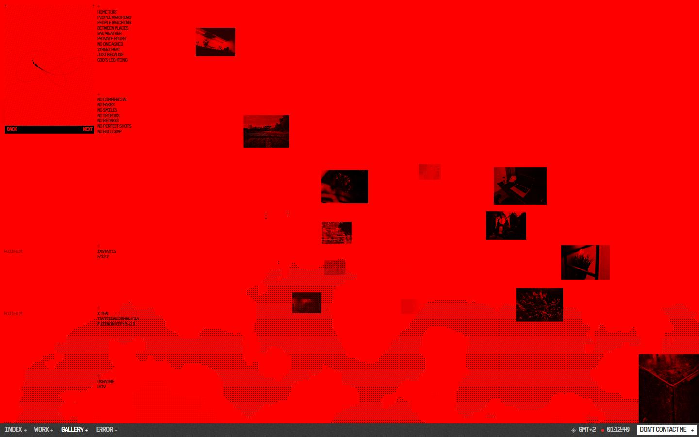
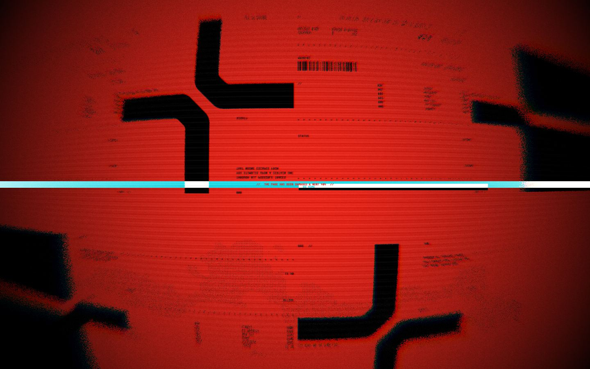
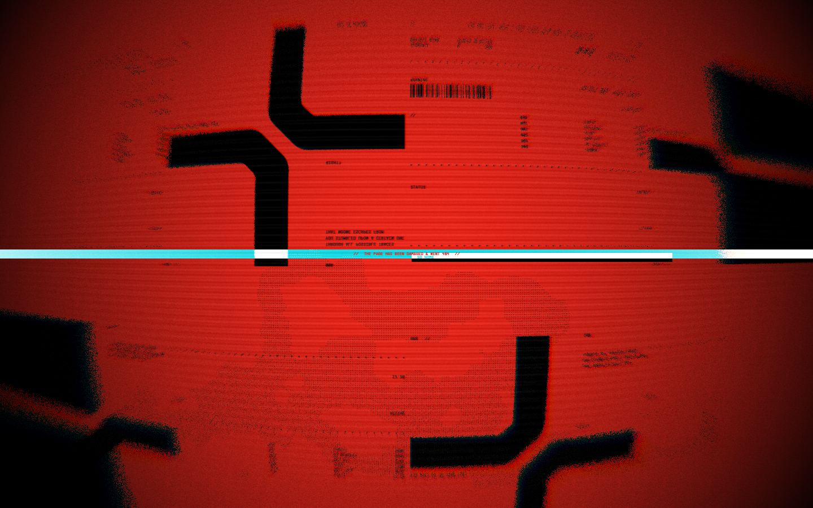
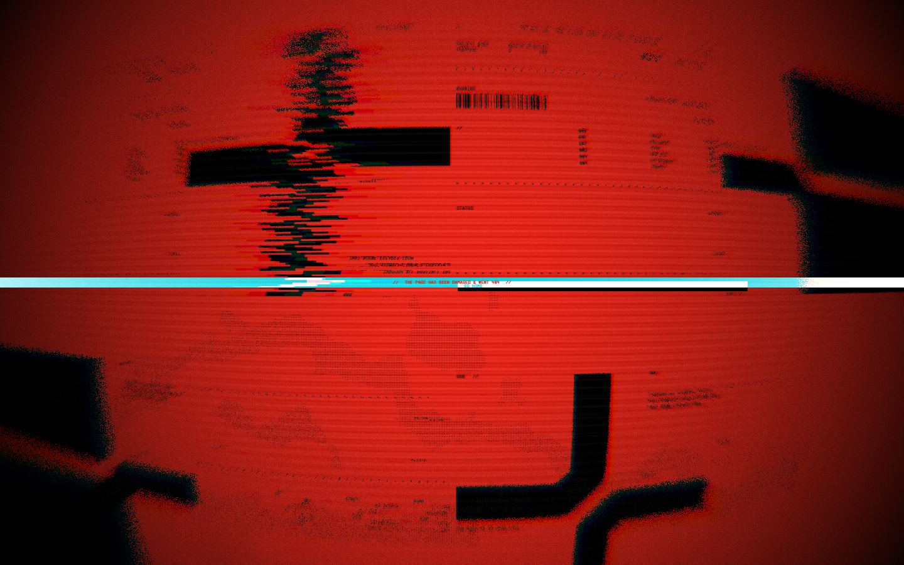
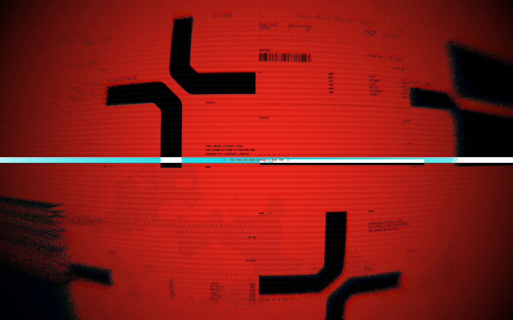
Mobile
Stack détectée
Barba.js, GSAP, Lenis, React Three Fiber, ScrollTrigger, SplitText/SplitType, Svelte, Swup, Three.js, WebGL
Versions : GSAP 3.12.5 · Three.js r?
Shaders GLSL personnalisés extraits : 40 (voir shaders.glsl)
Design tokens
Couleurs (fonds, pondérées par surface)
#393939 · #e8271c · #000000 · #ffffff · #d9d9d9 · #ff0000
Couleurs de texte
#ffffff · #393939 · #c8c8c8 · #daecf1
Polices utilisées (par volume de texte)
PP Supply Sans
Fichiers de police chargés
Typographie
| Élément | Police | Taille | Graisse | Interligne | Interlettrage | Casse |
|---|---|---|---|---|---|---|
| h2 | "PP Supply Sans", "Neue Haas Grotesk Text", Inter, | 128px | 400 | 102px | -5.12px | uppercase |
| p | "PP Supply Sans", "Neue Haas Grotesk Text", Inter, | 10px | 400 | 5px | -0.4px | uppercase |
| a | "PP Supply Sans", "Neue Haas Grotesk Text", Inter, | 10px | 400 | 10px | -0.4px | uppercase |
| button | "PP Supply Sans", "Neue Haas Grotesk Text", Inter, | 10px | 400 | 10px | -0.4px | uppercase |
| body | "PP Supply Sans", "Neue Haas Grotesk Text", Inter, | 16px | 400 | normal | normal | none |
Échelle des tailles de texte
10px (634) · 14px (7) · 128px (3) · 16px (2) · 64px (2)
Arrondis
aucun (angles droits)
Transitions CSS fréquentes
Points de rupture (media queries)
720px · 860px · 620px
Animations CSS (@keyframes)
peekIn, lineIn, grain, lineFadeOnly, hud-hatch, ftr-run
Variables CSS (:root)
--font-main: 'PP Supply Sans','Neue Haas Grotesk Text','Inter',-apple-system,
BlinkMacSystemFont,'Helvetica Neue',Arial,sans-serif;
--font-mono: 'PP Supply Mono',ui-monospace,'SF Mono','Roboto Mono',monospace;
--c-white: #ffffff;
--c-fog: #afafaf;
--c-slate: #6e6e6e;
--c-label: #636363;
--c-fade: #c3c3c3;
--c-ink: #1a1a1a;
--hud-size: 11px;
--tracking: -0.04em;
--ui-ink: #393939;
--ui-dim: rgba(57,57,57,.5);
--ui-red: #e8271c;
--ui-grey: #c8c8c8;
--ui-bar: #393939;
--ui-10: 10px;
--ui-14: 14px;
--ui-track: -0.04em;
--about-ground: #e8271c;
--about-ink: #C8C8C8;
--about-dim: rgba(200,200,200,.5);
--grain-blend: lighten;
--grain-opacity: .06;
--grain-brightness: 100%;
--grain-contrast: 50%;
--grain-size: 1em;
--ease-osmo: cubic-bezier(0.625, 0.05, 0, 1);
--ease-out: cubic-bezier(.22, .61, .36, 1);
--loader-ink: #ffffff;
--loader-ground: #000000;
Structure de la home
Hauteur : 900 px — 1230 nœuds DOM — canvas 11, vidéos 0, images 13
| # | Bloc | Hauteur | Titre | Médias |
|---|---|---|---|---|
| 1 | div#aboutRoot .about | 900 | 5 | |
| 2 | div .hud is-on | 900 | 1 | |
| 3 | div .ts | 1644 | 14 | |
| 4 | div .b2 is-held | 900 | 2 | |
| 5 | div .ftr | 900 | find yourway out ofhere | 0 |
| 6 | div .ftr__sheet | 900 | 0 |
Navigation : index · work · gallery · 404
Boutons / CTA :
SEO
Plan des titres
Performance (mesure locale, Chrome headless, connexion non bridée)
Mobile
Fichiers
captures/ : arrivée, scroll desktop (1440×900), pleine page, pages internes, mobile (390×844 @2x) ; vidéo de scroll dans la release GitHub « videos » (lien en haut de fiche)page.html : DOM rendu · styles.css : CSS chargé · scripts/ : JS chargé (index dans _index.json) · shaders.glsl : shaders extraits · rea-bundle.json : analyse REA du bundle (chunks, routes, endpoints)